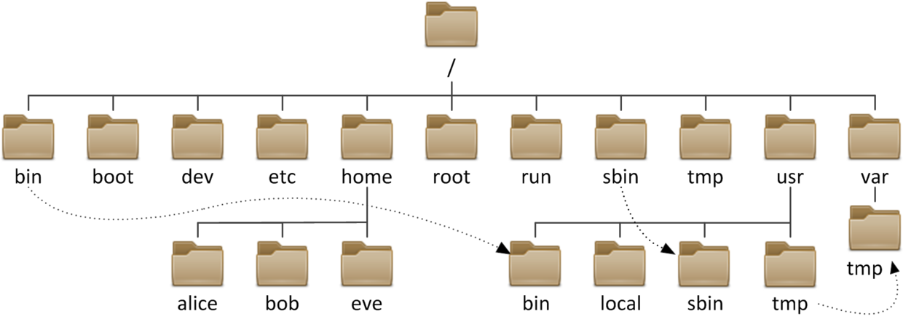
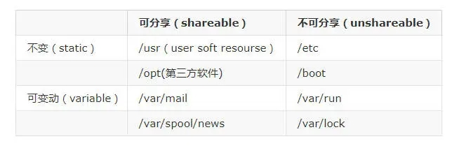

第一周
1. 图文并茂解释开源许可证 GPL、BSD、MIT、Mozilla、Apache和LGPL的区别？

1.1 open acess
现今存在的开源协议很多，而经过Open Source Initiative组织通过批准的开源协议目前有58种。我们现在常见的开源协议如BSD, GPL, LGPL,MIT等都是OSI批准的协议。如果要开源自己的代码，最好也是选择这些被批准的开源协议。
1.2 GPL许可证(GNU General Public License)
1980，一个叫Richard Stallman的美国人因为无法容忍软件私有化，而建立了GPL许可证。他认为，软件的源代码是全人类的财富，应该允许程序员自由共享。 GPL许可证的核心含义是：允许任何人观看、修改，并散播程序软件里的原始程序码，条件是如果你要发布修改后的版本就要连源代码一起公布，不允许修改后和衍生的代码做为闭源的商业软件发布和销售。
GPL协议和BSD，Apache Licence等鼓励代码重用的许可很不一样。GPL的出发点是代码的开源/免费使用和引用/修改/衍生代码的开源/免费使用，但不允许修改后和衍生的代码做为闭源的商业软件发布和销售。这也就是为什么我们能用免费的各种linux，包括商业公司的linux和linux上各种各样的由个人，组织，以及商业软件公司开发的免费软件了。
GPL协议的主要内容是只要在一个软件中使用(”使用”指类库引用，修改后的代码或者衍生代码)GPL协议的产品，则该软件产品必须也采用GPL协议，既必须也是开源和免费。这就是所谓的”传染性”。GPL协议的产品作为一个单独的产品使用没有任何问题，还可以享受免费的优势。
由于GPL严格要求使用了GPL类库的软件产品必须使用GPL协议，对于使用GPL协议的开源代码，商业软件或者对代码有保密要求的部门就不适合集成/采用作为类库和二次开发的基础。
其它细节如再发布的时候需要伴随GPL协议等和BSD/Apache等类似。
1.3 BSD许可证(Berkeley Software Distribution license)
(original BSD license、FreeBSD license、Original BSD license)
BSD许可证原先是用在加州大学伯克利分校发表的各个4.4BSD/4.4BSD-Lite版本上面（BSD是Berkeley Software Distribution的简写）的，后来也就逐渐沿用下来。1979年加州大学伯克利分校发布了BSD Unix，被称为开放源代码的先驱，BSD许可证就是随着BSD Unix发展起来的。BSD许可证现在被Apache和BSD操作系统等开源软件所采纳。
BSD开源协议是一个给于使用者很大自由的协议。基本上使用者可以”为所欲为”，可以自由的使用，修改源代码，也可以将修改后的代码作为开源或者专有软件再发布。 但”为所欲为”的前提当你发布使用了BSD协议的代码，或则以BSD协议代码为基础做二次开发自己的产品时，需要满足三个条件：
如果再发布的产品中包含源代码，则在源代码中必须带有原来代码中的BSD协议。 如果再发布的只是二进制类库/软件，则需要在类库/软件的文档和版权声明中包含原来代码中的BSD协议。 不可以用开源代码的作者、机构名字和原来产品的名字做市场推广。 BSD 代码鼓励代码共享，但需要尊重代码作者的著作权。BSD由于允许使用者修改和重新发布代码，也允许使用或在BSD代码上开发商业软件发布和销售，因此是对商业集成很友好的协议。而很多的公司企业在选用开源产品的时候都首选BSD协议，因为可以完全控制这些第三方的代码，在必要的时候可以修改或者二次开发。
1.4 MIT许可证（The MIT License）
MIT许可证（The MIT License）是许多软件授权条款中，被广泛使用的其中一种。与其他常见的软件授权条款（如GPL、LGPL、BSD）相比，MIT是相对宽松的软件授权条款。
MIT许可证之名源自麻省理工学院（Massachusetts Institute of Technology, MIT），又称“X条款”（X License）或“X11条款”（X11 License）。
MIT是和BSD一样宽范的许可协议，作者只想保留版权,而无任何其他了限制。也就是说，你必须在你的发行版里包含原许可协议的声明，无论你是以二进制发布的还是以源代码发布的。
1.5 MPL（Mozilla Public License）
MPL是The Mozilla Public License的简写，是1998年初Netscape的 Mozilla小组为其开源软件项目设计的软件许可证。MPL许可证出现的最重要原因就是，Netscape公司认为GPL许可证没有很好地平衡开发者对源代码的需求和他们利用源代码获得的利益。同著名的GPL许可证和BSD许可证相比，MPL在许多权利与义务的约定方面与它们相同（因为都是符合OSIA 认定的开源软件许可证）。但是，相比而言MPL还有以下几个显著的不同之处:
MPL虽然要求对于经MPL许可证发布的源代码的修改也要以MPL许可证的方式再许可出来，以保证其他人可以在MPL的条款下共享源代码。但是，在MPL 许可证中对“发布”的定义是“以源代码方式发布的文件”，这就意味着MPL允许一个企业在自己已有的源代码库上加一个接口，除了接口程序的源代码以MPL 许可证的形式对外许可外，源代码库中的源代码就可以不用MPL许可证的方式强制对外许可。这些，就为借鉴别人的源代码用做自己商业软件开发的行为留了一个豁口。
MPL许可证第三条第7款中允许被许可人将经过MPL许可证获得的源代码同自己其他类型的代码混合得到自己的软件程序。
对软件专利的态度，MPL许可证不像GPL许可证那样明确表示反对软件专利，但是却明确要求源代码的提供者不能提供已经受专利保护的源代码（除非他本人是专利权人，并书面向公众免费许可这些源代码），也不能在将这些源代码以开放源代码许可证形式许可后再去申请与这些源代码有关的专利。
对源代码的定义：而在MPL（1.1版本）许可证中，对源代码的定义是:“源代码指的是对作品进行修改最优先择取的形式，它包括:所有模块的所有源程序，加上有关的接口的定义，加上控制可执行作品的安装和编译的‘原本’（原文为‘Script’），或者不是与初始源代码显著不同的源代码就是被源代码贡献者选择的从公共领域可以得到的程序代码。”
MPL许可证第3条有专门的一款是关于对源代码修改进行描述的规定，就是要求所有再发布者都得有一个专门的文件就对源代码程序修改的时间和修改的方式有描述。
1.6 Apache
Apache Licence是著名的非盈利开源组织Apache采用的协议。该协议和BSD类似，同样鼓励代码共享和尊重原作者的著作权，同样允许代码修改，再发布（作为开源或商业软件）。需要满足的条件也和BSD类似：
需要给使用代码的用户一份Apache Licence，如果你修改了代码，需要在被修改的文件中说明。在延伸的代码中（修改和有源代码衍生的代码中）需要带有原来代码中的协议，商标，专利声明和其他原来作者规定需要包含的说明。如果在发布的产品中包含一个Notice文件，则在Notice文件中需要带有Apache Licence。你可以在Notice中增加自己的许可，但不可以表现为对Apache Licence构成更改。Apache Licence也是对商业应用友好的许可。使用者也可以在需要的时候修改代码来满足需要并作为开源或商业产品发布/销售。
1.7 LGPL
GNU宽通用公共许可证（GNU Lesser General Public License，简称GNU LGPL、LGPL）被用于一小部分（不是全部）的GNU库。
LGPL是GPL的一个为主要为类库使用设计的开源协议。和GPL要求任何使用/修改/衍生之GPL类库的的软件必须采用GPL协议不同。LGPL 允许商业软件通过类库引用(link)方式使用LGPL类库而不需要开源商业软件的代码。这使得采用LGPL协议的开源代码可以被商业软件作为类库引用并发布和销售。
但是如果修改LGPL协议的代码或者衍生，则所有修改的代码，涉及修改部分的额外代码和衍生的代码都必须采用LGPL协议。因此LGPL协议的开源代码很适合作为第三方类库被商业软件引用，但不适合希望以LGPL协议代码为基础，通过修改和衍生的方式做二次开发的商业软件采用。
GPL/LGPL都保障原作者的知识产权，避免有人利用开源代码复制并开发类似的产品。
LGPL与GPL差异之处
LGPL主要使用之标的为软件函式库(“Software Libraries”),虽然其亦可使用于独立存在的应用程式。比较有名的例子为Mozilla跟OpenOffice。
LGPL有一特点是LGPL软件可以被转换成GPL(参见Section 3)。这种特性对于在GPL函式库或应用程式中直接使用LGPL程式有一定程度之帮助。
2. 安装各发行版系统的安装(centos, rockylinux, ubuntu, 等)
2.1 CentOS 8
自定义分区
Storage Configuration -> Custiom
MANUAL PARTITIONING -> Standard Partition
创建/boot分区
+
Mount Point -> /boot
Desired Capacity -> 1G
创建根分区
+
Mount Point -> /
Desired Capacity -> 100G
创建swap分区
+
Mount Point -> swap
Desired Capacity -> 2G
创建自定义的/data数据分区
+
Mount Point -> /data
Desired Capacity -> 50G
安装指定包组(Software Selection)
server with GUI
配置网络和主机名
on
Host Name
设置时区和时间
Asia Shanghai
2.2 Ubuntu 20.04.3
Mirror address
http://mirrors.aliyun.com/ubuntu/
SSH Setup
[x] Install OpenSSH server 空格打上叉
3.Linux中总结(man)
Linux man 命令用于显示 Linux 操作系统中的手册页（manual page），它提供了对 Linux 操作系统中各种命令、函数、库等的详细说明，man 命令有许多参数。
使用 man ls 命令可以查看 ls 命令的手册页。man 命令的使用方法较为简单，可以通过 man 命令的帮助文档 (man man) 查看更多使用方法和参数说明。
3.1 如何通过一个简短的关键字 ，例如process 获取相关的命令。
1 | |
3.2 通过命令的描述，选择一个命令，获取命令的man文档。
1 | |
3.3 解读man文档，man分几个部分？man每个部分的解释，特别是语法部分。<>, [] …等各代表什么含义。
存放路径：/usr/share/man
参数介绍
| 参数 | 含义 |
|---|---|
| -f | 显示命令或函数的简短描述。 |
| -k | 使用关键字搜索所有与该关键字相关的手册页。 |
| -S | 指定手册页的搜索路径。 |
| -a | 显示所有与命令或函数相关的手册页。 |
| -w | 显示命令或函数的手册页文件路径。 |
| -C | 指定手册页的格式。 |
| -l | 显示所有手册页的列表。 |
| -p | 显示函数的原型。 |
| -s | 显示指定节的手册页。 |
| -u | 显示未压缩的手册页。 |
| -h | 显示帮助信息。 |
| -M | 指定手册页的源路径。 |
帮助信息含义
| 标题 | 含义 |
|---|---|
| NAME | 命令名称及功能 |
| SYNOPSIS | 命令语法，包括可用的选项 |
| DESCRIPTION | 命令功能的详细说明 |
| OPTIONS | 每个选项的详细说明 |
| EXAMPLES | 用法示例 |
| ENVIRONMENT | 命令使用的环境变量 |
| FILES | 命令相关的配置文件 |
| AUTHOR | 程序的作者 |
| BUGS | 错误、缺点、警告 |
| COPYRIGHT | 版权信息 |
| SEE ALSO | 参照、相关信息 |
| [ ] | 可选内容 |
| < > | 必选内容 |
| a |b | 多选一 |
| { } | 分组 |
| … | 同一个内容可出现多次 |
查看man章节
1 | |
| 章节 | 说明 |
|---|---|
| 1 | 标准用户命令（包含大量的命令手册） |
| 2 | 系统调用（在程序中使用，用来请求内核执行指令） |
| 3 | 库调用 |
| 4 | 特殊文件（包含物理设备和设备的驱动信息） |
| 5 | 文件格式（包含配置文件） |
| 6 | 游戏 |
| 7 | 杂项（各种混杂信息） |
| 8 | 管理命令（系统管理员使用的特殊命令） |
| 9 | 系统内核KPI |
3.4 根据语法部分，简要的写几个操作。
使用实例
查看命令的使用说明：
1 | |
在所有手册页中搜索关键字：
1 | |
显示所有与命令或函数相关的手册页：
1 | |
显示命令或函数的手册页文件路径：
1 | |
显示函数的原型：
1 | |
显示指定节的手册页：
1 | |
显示未压缩的手册页：
1 | |
指定手册页的源路径：
1 | |
4. 切换到/etc/目录，列出fstab文件的详细信息，详细解决fstab一行，每个或每几个字符的详细含义。
/etc/fstab文件包含系统启动时自动挂载的分区，可以通过修改文件内容将某些文件设置为开机启自动挂载
1 | |
文件内容解释：
第一列：设备磁盘文件名或UUID（磁盘文件名会因为磁盘顺序变化导致挂载乱序，UUID唯一标识符，命令blkid查看文件名和对应的UUID）
第二列：设备挂载点
第三列：挂载的文件系统格式（如：ext3，ext4，xfs）
第四列：文件系统挂载参数，默认为defaults
1 | |
第五列：能否被dump备份；0表示不备份，1表示每天备份，2表示不定期备份；默认为0
第六列：开机时是否检测磁盘扇区；0表示不检验，1，2表示检验
5. 简要说明FHS结构。


特点：
规范每个目录下存放什么类型数据
文件系统从 / 开始
文件名最长255个字节
路径分隔符：/
包括路径在内文件名称最长4095个字节
严格区分大小写
蓝色：目录；绿色：可执行文件；红色：压缩文件；浅蓝色：链接文件；灰色：其他文件
除了斜杠和NUL,所有字符都有效.但使用特殊字符的目录名和文件不推荐使用，有些字符需要用引 号来引用
每个文件都有两类相关数据：元数据：metadata，即属性， 数据：data，即文件内容
1 | |
应用程序的组成部分
1 | |
6. 用自己的理解总结 文件管理，用户管理，组用户，权限管理相关的命令。
6.1 文件
显示当前工作目录
pwd
绝对路径和相对路径
绝对路径
以正斜杠 / 即根目录开始
完整的文件的位置路径
可用于任何想指定一个文件名的时候
相对路径
不以斜线开始 一般情况下，是指相对于当前工作目录的路径，特殊场景下，是相对于某目录的位置 可以作为一个简短的形式指定一个文件名
基名：basename，只取文件名而不要路径
目录名：dirname，只取路径，不要文件名
目录切换
切换到上级目录： cd …
切换到上一次目录： cd -
切换到根目录：cd
列出目录信息
命令格式：ls 选项 参数
1 | |
查看文件状态stat
时间戳：
Access：访问时间，atime，读取文件内容（进入文件发生改变，echo 导入数据不影响）
Modify：修改时间，mtime，改变文件内容(改变文件数据，不改变内容wq保存退出也会影响)
Change：改变时间，ctime，元数据发生改变（改变数据或权限都会影响）
文件通配符：
文件通配符可以用来匹配符合条件的多个文件，方便批量管理文件
通配符采有特定的符号，表示特定的含义，此特符号称为元 meta 字符
常见的通配符如下：
1 | |
创建空文件和刷新时间
格式：touch 选项 参数（文件名）
选项说明：
1 | |
复制文件和目录
copy 复制文件和目录。
cp 命令主要用于复制文件或目录。即用来将一个或多个源文件或者目录复制到指定的目的文件或目录。
cp 命令可以将单个源文件复制成一个指定文件名的具体的文件或一个已经存在的目录下。
cp 命令支持同时复制多个文件，当一次复制多个文件时，目标文件参数必须是一个已经存在的目录，否则将出现错误
格式：cp [选项] source_file dest_file
常用选项：
1 | |
移动和重命名文件
mv 移动文件或改名
如果目标文件是文件夹，则源文件直接移动到该文件夹内，名字还是源文件的名字
如果目标文件时文件，则源文件移动的同时也会更改名字
如果源文件为多个，则目标必须是目录，并且统一移动到目录下
格式： mv 选项 参数
1 | |
删除文件（重点）
rm 删除文件和目录
格式：rm [选项] file
常用选项：
1 | |
删除特殊字符：例如以 - 开头的文件
因为一般“-”后面接的是选项。因此，单纯地使用rm -file，系统的命令就会误判。所以，只能用避过首字符“-”的方式（加上本目录 ./）
1 | |
显示目录树：tree
格式：tree 选项 文件
1 | |
创建目录：mkdir
格式：mkdir 选项 目录文件（一个或多个）
1 | |
删除空目录：rmdir
常见选项：
1 | |
6.2 文本内容查看
查看文本文件内容：cat
格式：cat 选项 文件file
1 | |
分页查看文件内容：more;less;head;tail
more 命令：可以实现分页查看文件，配合管道符实现输出信息的分页
快捷键：
1 | |
less 命令：也可以实现分页查看文件或STDIN输出，less 命令是man命令使用的分页器
格式：less 选项 文件
1 | |
常用操作快捷键
1 | |
head 命令：可以显示文件或标准输入的前面行
格式：head 选项 文件
1 | |
tail命令：tail和head相反，查看文件或标准输入的倒数行
格式：tail 选项 文件
1 | |
按列抽取文本：cut
cut命令：可以提取文本文件或STDIN数据的指定列
格式：cut 选项 文件
1 | |
收集文本统计数据：wc
wc命令：可用于统计文件的总行数，单词总数，字节总数和字符总数
格式：wc 选项 文件
1 | |
文件排序：sort
sort命令：把整理过的文本显示在终端，不改变原始文件数据
格式：sort 选项 文件
1 | |
去重：uniq
uniq命令：从输入中删除前后相接的重复项
格式：uniq 选项 文件
1 | |
文本比较：diff
diff命令：比较两个文件之间的区别
-u 选项来输出“统一的（unified）”diff格式文件，最适用于补丁文件
6.3 用户
用户
linux中每个用户是通过UID来唯一标识
id
系统用户UID：1-999
普通用户UID：1000+
用户组：
linux中可以将一个或多个用户加入用户组中，用户组是通过GID来唯一标识
1 | |
系统组：1-999
普通用户组：1000+
主要组：用户必须属于一个且只有一个主组，默认创建用户是会自动创建和用户同名的组，做为用户的主要组
附加组：一个用户可以属于零个或者多个辅助组，附属组
用户和组的配置文件
/etc/passwd：用户及其属性信息(名称、UID、主组ID等）
/etc/shadow：用户密码及其相关属性
/etc/group：组及其属性信息
/etc/gshadow：组密码及其相关属性
6.4 用户和组管理命令
useradd :创建用户
usermod：修改用户
userdel：删除用户
groupadd：创建组
groupmod：修改组属性
groupdel：删除组
6.5 文件权限管理
程序访问文件时的权限，取决于此程序的发起者
- 进程的发起者，同文件的属主：则应用文件属主权限
进程的发起者，属于文件属组；则应用文件属组权限
应用文件“其它”权限
chmod chown
chown用法：
用来更改某个目录或文件的用户名和用户组。
例子：chown root:root filename
chown 用户名:组名 文件路径（可以是绝对路径也可以是相对路径）
chmod用法：
用来修改某个目录或文件的访问权限。
例子：chmod -R 777 filename
访问控制列表ACL
setfacl命令：可设置ACL权限
getfacl命令：可查看设置的ACL权限
1 | |
本博客所有文章除特别声明外，均采用 CC BY-SA 4.0 协议 ，转载请注明出处！